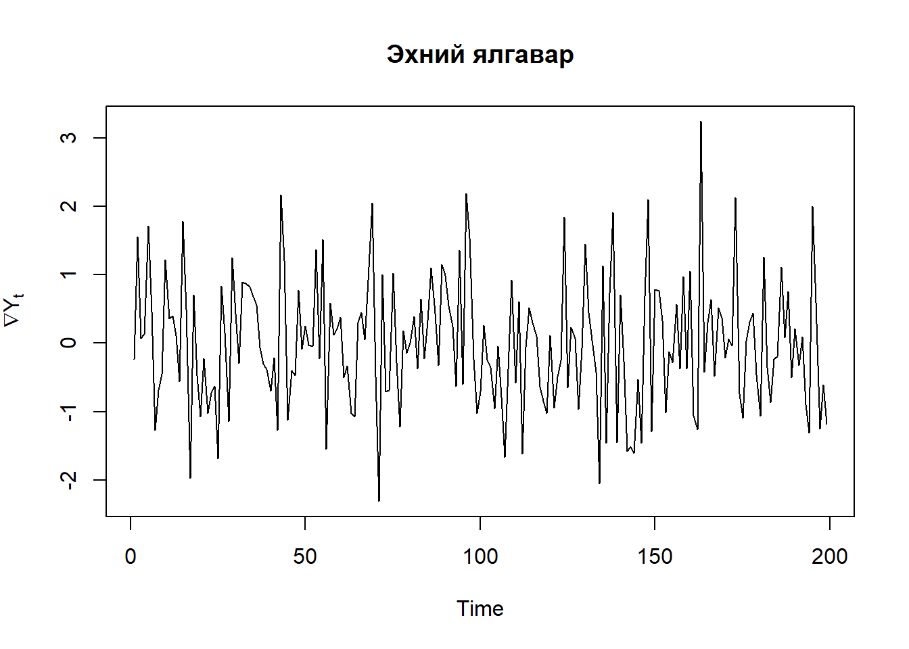
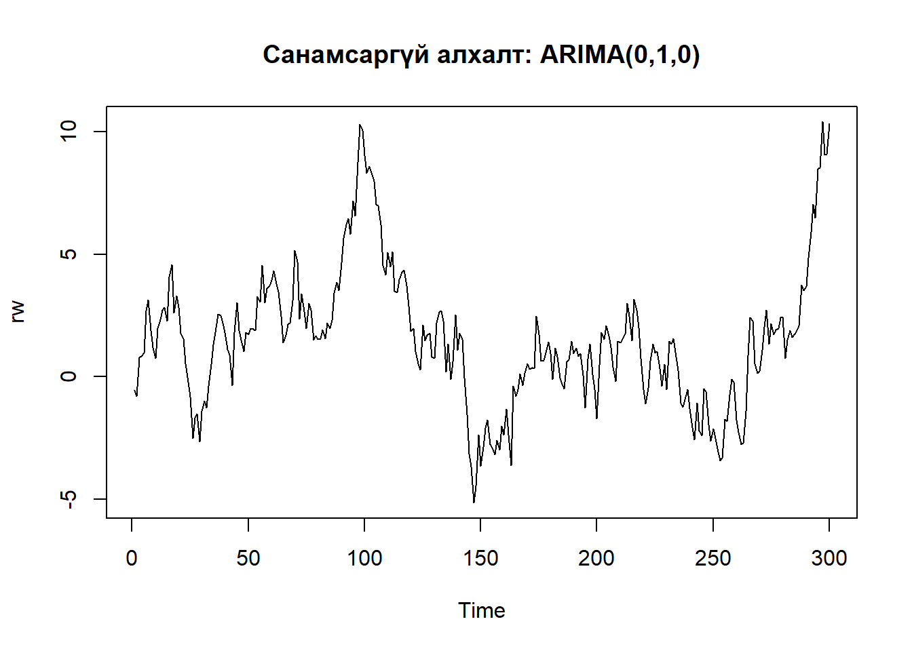
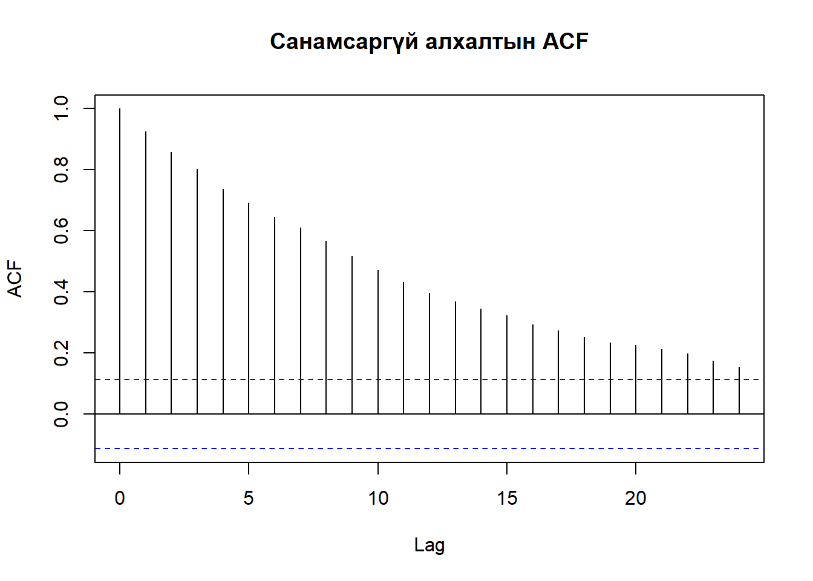
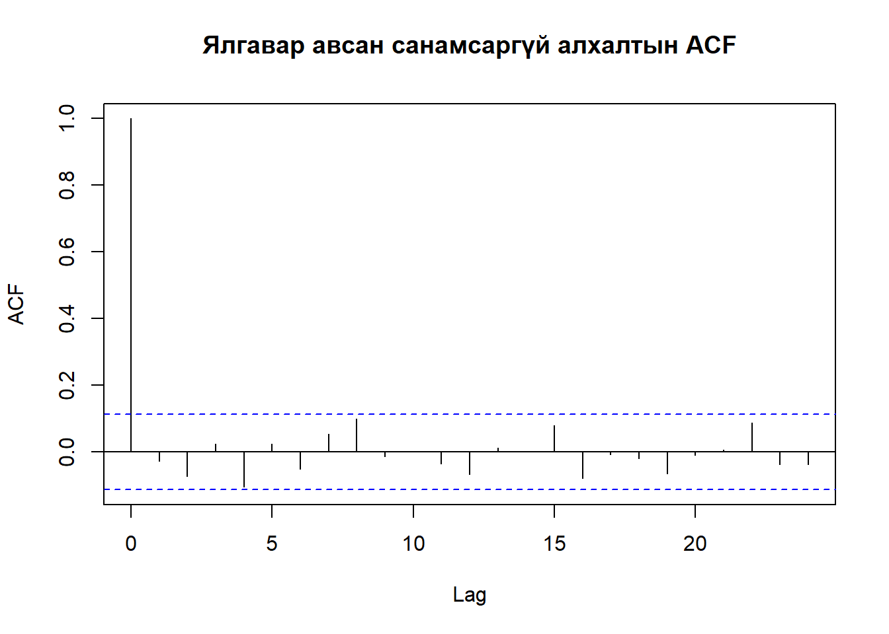
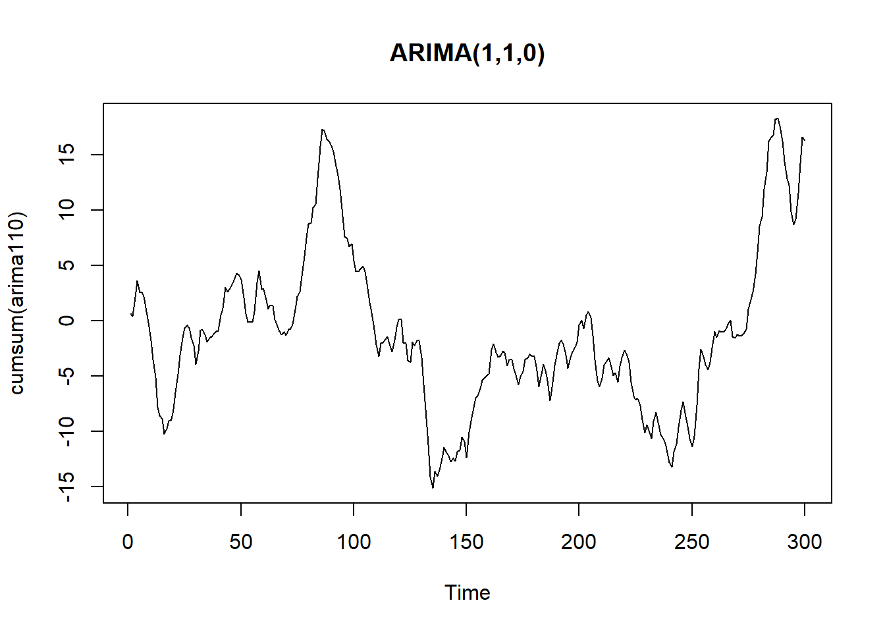
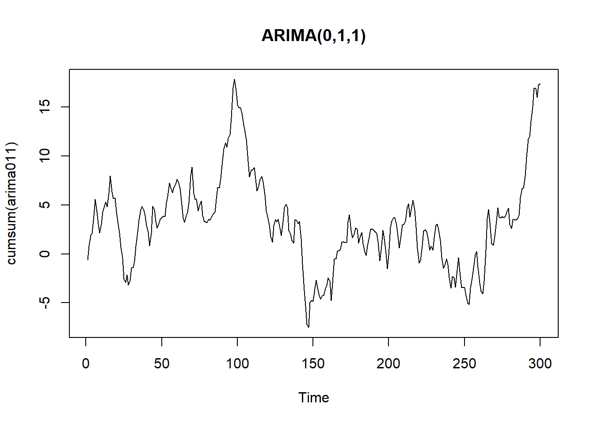
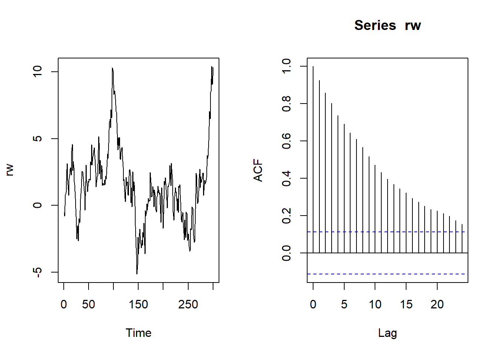

set.seed(123)
e <- rnorm(200)
rw <- cumsum(e)
plot.ts(
rw,
main="Санамсаргүй алхалт",
ylab=expression(Y[t])
)
Бодит ертөнцийн олон хугацааны цуваа стационар бус байдаг.
Жишээнүүд:
ARMA загварууд стационар байдлыг шаарддаг тул загварчлахаас өмнө хувиргалт хийх шаардлагатай болдог.
ARIMA загвар нь ялгавар авах замаар ARMA загварыг өргөтгөдөг.
ARIMA гэдэг нь:
Санамсаргүй алхалтыг авч үзье:
\[ Y_t=Y_{t-1}+\varepsilon_t. \]
Энэ цуваа нь стационар бус, учир нь:
Гэхдээ
\[ Y_t-Y_{t-1} = \varepsilon_t \]
нь цагаан чимээ юм.
Иймд стационар бус процесс ялгавар авсны дараа стационар болж болно.
Хугацааны цувааны эхний ялгавар нь
\[ \nabla Y_t = Y_t-Y_{t-1}. \]
set.seed(123)
e <- rnorm(200)
rw <- cumsum(e)
plot.ts(
rw,
main="Санамсаргүй алхалт",
ylab=expression(Y[t])
)
Одоо эхний ялгаврыг тооцоолъё:
drw <- diff(rw)
plot.ts(
drw,
main="Эхний ялгавар",
ylab=expression(nabla*Y[t])
)
Ялгавар авсан цуваа стационар харагдаж байна.
ARIMA(\(p,d,q\)) загвар нь
\[ \phi(B)(1-B)^dY_t = \theta(B)\varepsilon_t, \]
нөхцлийг хангана, энд
Оператор
\[ (1-B)^d \]
нь ялгавар авахыг илэрхийлнэ.
Хойш шилжилтийн операторыг
\[ BY_t=Y_{t-1} \]
гэж тодорхойлдог.
Иймд
\[ (1-B)Y_t = Y_t-Y_{t-1}. \]
Энэ тэмдэглэгээ нь загварын илэрхийллийг хялбаршуулдаг.
AR(1):
\[ (1-\phi B)Y_t = \varepsilon_t. \]
MA(1):
\[ Y_t = (1+\theta B)\varepsilon_t. \]
ARIMA(1,1,1):
\[ (1-\phi B)(1-B)Y_t = (1+\theta B)\varepsilon_t. \]
Хамгийн энгийн ARIMA загвар нь
\[ (1-B)Y_t = \varepsilon_t. \]
Үүнтэй ижил утгаар
\[ Y_t=Y_{t-1}+\varepsilon_t. \]
Энэ нь санамсаргүй алхалтын загвар юм.
set.seed(123)
rw <- cumsum(rnorm(300))
plot.ts(
rw,
main="Санамсаргүй алхалт: ARIMA(0,1,0)"
)
acf(
rw,
main="Санамсаргүй алхалтын ACF"
)
Корреляцууд маш удаан буурдаг.
Энэ зан төлөв нь стационар бус процессуудад ердийн зүйл юм.
acf(
diff(rw),
main="Ялгавар авсан санамсаргүй алхалтын ACF"
)
Ялгавар авсан цуваа нь цагаан чимээтэй илүү төстэй ажилладаг.
Дараахьыг авч үзье:
\[ (1-\phi B)(1-B)Y_t = \varepsilon_t. \]
Энэ загвар нь ялгавар авсан цуваанд AR(1) бүтцийг хэрэглэдэг.
set.seed(123)
arima110 <- arima.sim(
model=list(ar=.6),
n=300
)
plot.ts(
cumsum(arima110),
main="ARIMA(1,1,0)"
)
Дараахьыг авч үзье:
\[ (1-B)Y_t = (1+\theta B)\varepsilon_t. \]
Энэ загвар нь таамаглахад ихэвчлэн ашигтай байдаг.
set.seed(123)
arima011 <- arima.sim(
model=list(ma=.7),
n=300
)
plot.ts(
cumsum(arima011),
main="ARIMA(0,1,1)"
)
Ердийн үзүүлэлтүүд:
par(mfrow=c(1,2))
plot.ts(rw)
acf(rw)
Дараахьыг авч үзье:
\[ Y_t=\phi Y_{t-1}+\varepsilon_t. \]
Хэрэв \[ \phi=1, \] бол
\[ Y_t=Y_{t-1}+\varepsilon_t, \] энэ нь санамсаргүй алхалт юм.
Процесс нь нэгж язгуур агуулдаг.
Нэгж язгуур нь стационар бус байдлыг илтгэнэ.
Нийтлэг статистик шалгалт нь Өргөтгөсөн Дики-Фуллер (ADF) шалгалт юм.
library(tseries)
adf.test(rw)arima() функцийг ашиглаж болно.
fit <- arima(
rw,
order=c(0,1,0)
)
fit
Call:
arima(x = rw, order = c(0, 1, 0))
sigma^2 estimated as 0.8946: log likelihood = -407.62, aic = 817.24Өөр хувилбар:
library(forecast)
fit <- Arima(
rw,
order=c(0,1,0)
)forecast багц нь дараахь боломжийг олгодог:
library(forecast)
fit <- auto.arima(rw)
fitАлгоритм нь
\[ p,d,q \]
-ийн утгуудыг автоматаар сонгодог.
library(forecast)
fit <- auto.arima(rw)
fc <- forecast(
fit,
h=20
)
plot(fc)Үүссэн таамаглал нь дараахь зүйлийг агуулна:
| Загвар | Стационар уу? | Ялгавар авах уу? |
|---|---|---|
| AR(\(p\)) | Тийм | Үгүй |
| MA(\(q\)) | Тийм | Үгүй |
| ARMA(\(p,q\)) | Тийм | Үгүй |
| ARIMA(\(p,d,q\)) | Заавал биш | Тийм |
ARIMA нь стационар бус хугацааны цувааг загварчлах боломжийг олгосноор ARMA-г өргөтгөдөг.
Сонгодог Box-Jenkins журам нь дараахь үе шатуудаас бүрдэнэ:
ARIMA(\(p,d,q\)) загвар нь дараахь зүйлийг нэгтгэдэг:
Гол ойлголтууд:
ARIMA нь практикт хамгийн өргөн хэрэглэгддэг таамаглах аргуудын нэг хэвээр байна.
arima() ашиглан ARIMA(0,1,0) загварыг тохируул.auto.arima() ашиглан загварыг автоматаар сонго.